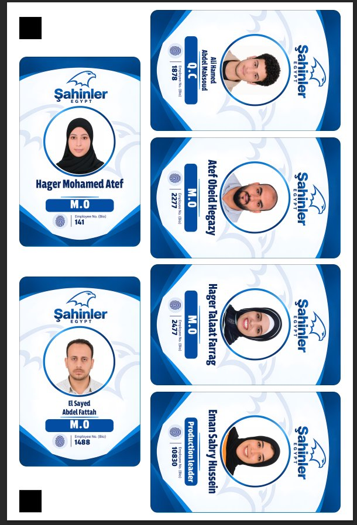
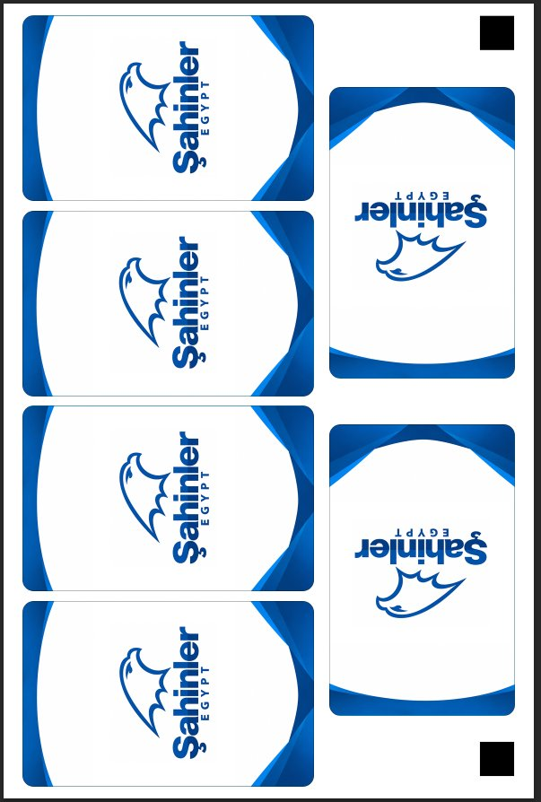

100%
A4 (210 × 297 mm)

الوجه (Front)

الظهر (Back)
🖱️ يمكنك سحب الورقة بالماوس لتدويرها وفحصها بحرية في الفضاء 3D
🔍 استخدم عجلة الماوس للتكبير (Zoom) واسحب للتنقل بين أركان الورقة
صفحة 4
صفحة 2
صفحة 1
صفحة 3
📖 تحريك سلايدر زاوية الطي يوضح كيف تنطبق صفحات الكتيب عند التدبيس
درج التغذية (Input)
الوش (Front)
الظهر (Back)
درج الخروج (Output)
قاعدة ذهبية لمنع هدر الورق:
في معظم الطابعات عند الطباعة اليدوية: إذا كانت كروت الـ ID مطبوعة بحيث أن الظهر معكوس أفقياً (كما في النموذج المرفق)، فإن الإعداد الصحيح في برنامج الطابعة هو:
✅ Flip on Long Edge (التقليب على الحافة الطويلة)